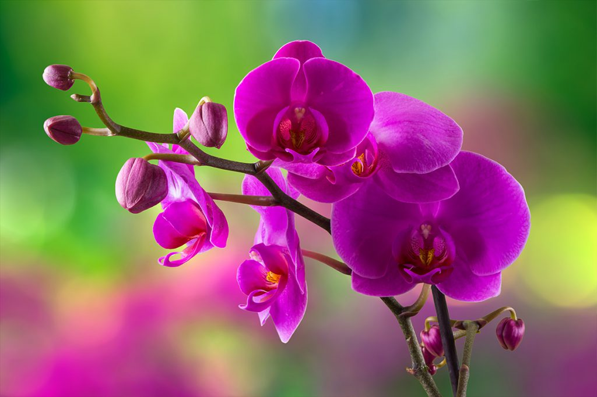

Orchids (Orchidaceae family), while beautiful, are notoriously difficult to grow. There are many different types of orchids producing a variety of colors and spectrums. Orchids used to be expensive and very rare, but advances in cloning techniques have allowed for quicker cultivation time. Orchids grow on every continent except Antarctica. They most often grow in the wild in tropical areas, especially Asia and South and Central America.
Orchids can be bought from many grocery stores already in full or partial bloom. In North America, they are most often houseplants as they need a steady temperature in order to thrive. Orchids should usually be repotted into a new pot after buying, using specific orchid potting mix. Lighting is also very important for orchids, they require bright, indirect light for most of the day. They do well with fresh air ventilation and should be watered only once dry.